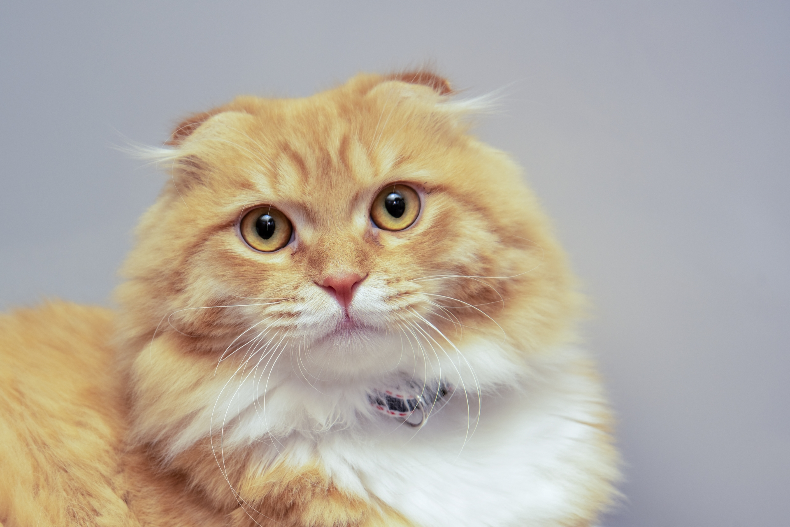

スコティッシュフォールド

- 品種
- スコティッシュフォールド
- 性格
-
穏やかでおっとりしている
人懐っこく甘えん坊
静かな環境を好む - 鳴く頻度
-
比較的少なめ
小さく控えめな声
必要なときだけ鳴く - 平均体重
- 3〜5kg
- 平均寿命
- 10〜15年
- 名前の由来
- スコットランド原産で、耳が折れている特徴から
スコティッシュフォールドの特徴
スコティッシュフォールドは、 前方に折れた耳が特徴的な猫種です。 この耳の形は遺伝によるもので、 すべての個体が折れ耳になるわけではありません。
性格は全体的に穏やかで、 人と一緒に過ごす時間を好む猫です。 鳴き声は控えめで、 落ち着いた家庭環境に向いています。
活発に走り回るよりも、 飼い主のそばでくつろぐ時間を大切にします。 室内飼いにも適しています。
一方で、 関節や骨に負担がかかりやすい傾向があるため、 日頃から歩き方や動きを観察することが大切です。
無理のない遊びと安心できる環境を整えることで、 心身ともに安定した暮らしを送ることができます。